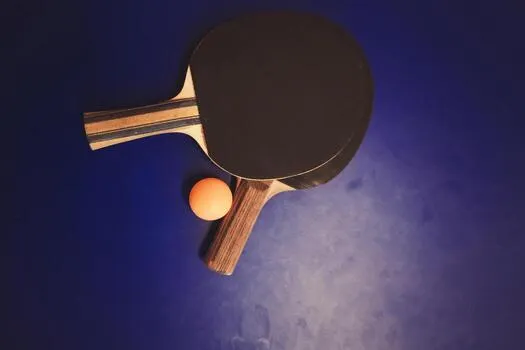
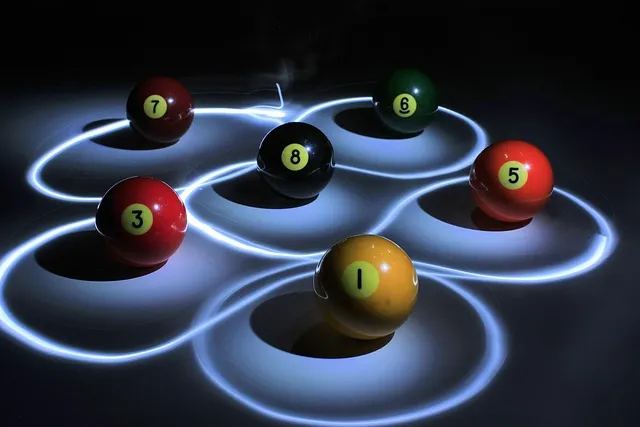

Momentálne študujem už 2. semester na fakulte informatiky (FIT). Bola to celkom jasná voľba, predsa len, málo kto zo slovenských študentov by chcel ostať doma, treba ísť spoznávať iné krajiny, minimálne bratov Čechov. Ak nie som v škole, pravdepodobne v sekcii nižšie zistíte prečo :)
"Hra je ako film, len ho môžete zažiť z prvej osoby." Toto zvyknem hovoriť každému, kto sa ma spýta, prečo videohry milujem. Už od malička som od súrodencov pýtal telefón, či majú hry a tak sa zrodila moja vášeň pre gaming. Hra za hrou priniesli zážitky s najbližšími priateľmi, nové skúsenosti, sebaovládanie, či samotnú schopnosť nevzdávať sa. Kompetetívne hry, tímové či hry vypeckované s dobrým príbehom, ak hľadáte parťáka, zakladajte lobby a pošlite mi invite na Steame :P

Milujem športy, tímové, či sólo, ako napríklad ten pingpong, beriem to super formu oddychu. Oddych od obrazoviek a trochu pohybu nezaškodí

Nebol by som študent, ak by som sa občas nechcel zabaviť... Biliard v Kachne so spolužiakmi = krásny zážitok